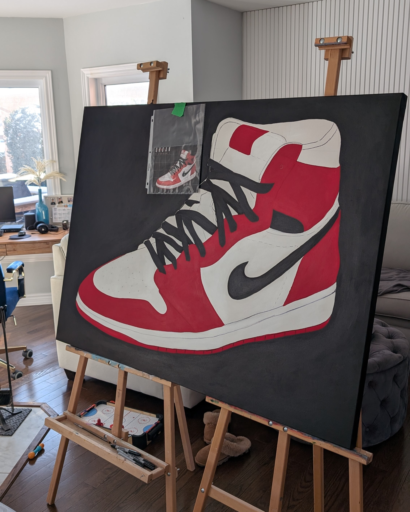

The Story Behind the Brush
Born in Montreal and having called Kitchener home before settling in Ottawa, Sophia's passion for art took root in early childhood, eventually leading her to share that joy by teaching students of all ages—from children discovering their first colors to seniors refining their lifelong craft.
When she isn't raising her two sons, Cole and Dean, or out for a walk with her Cockapoo (Lily), Sophia is almost certainly at her easel. Her work spans from the fluid energy of mixed-media abstracts to precise automotive and athletic portraits. Beyond the canvas, she has also brought stories to life as the illustrator of two children’s novels.
For Sophia, every spare moment is an opportunity to paint, and she finds beauty in the process of turning a blank surface into a narrative of color and texture.